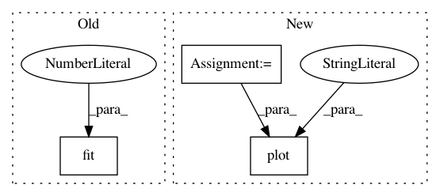

883cee17114c35a597351b7cc0f1b7e040352d54,statsmodels/tsa/tests/test_holtwinters.py,TestHoltWinters,test_simulate,#TestHoltWinters#,728
Before Change
// sim <- simulate(fit, innov = innov*fit$sigma)
expected = [78.06170, 49.01698, 61.71652, 67.60118]
fit = ExponentialSmoothing(
self.austourists, seasonal_periods=4, trend="add", seasonal="mul"
).fit(
smoothing_level=0.3156, smoothing_slope=1e-4, smoothing_seasonal=1e-4,
// optimized=False
// use_basinhopping=True
)
print(fit.summary())
np.random.seed(0)
After Change
np.random.seed(0)
nsim = 100
steps = 20
sim = fit.simulate(steps, nsim=nsim, error="mul")
import matplotlib.pyplot as plt
n = len(self.austourists)
plt.figure(figsize=(9, 6), dpi=100)
plt.plot(range(n), self.austourists)
plt.plot(range(n), fit.fittedvalues, "--")
for i in range(nsim):
plt.plot(range(n, n+steps), sim[:,i], "m-", alpha=0.1)
plt.plot(range(n, n+4), expected)
plt.grid()
plt.savefig("test.png")
In pattern: SUPERPATTERN
Frequency: 3
Non-data size: 3
Instances
Project Name: statsmodels/statsmodels
Commit Name: 883cee17114c35a597351b7cc0f1b7e040352d54
Time: 2020-02-28
Author: samuel.scherrer@posteo.de
File Name: statsmodels/tsa/tests/test_holtwinters.py
Class Name: TestHoltWinters
Method Name: test_simulate
Project Name: geomstats/geomstats
Commit Name: 078012f5acd06bfdfc652148f546864b8f82db50
Time: 2020-01-23
Author: hadizaatiti@gmail.com
File Name: examples/plot_kmeans_poincare_disk.py
Class Name:
Method Name: main
Project Name: geomstats/geomstats
Commit Name: 1a92f14dfa223c5e9fa57ec6865f0d01b8d741a3
Time: 2020-01-23
Author: hadizaatiti@gmail.com
File Name: examples/plot_kmeans_poincare_disk.py
Class Name:
Method Name: main